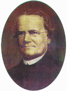
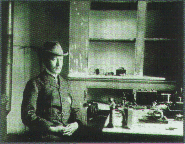
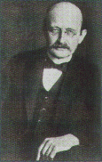

| |
|
1900
  Mendel
yasalarýnýn doðruluðu deneylerle kanýtlandý. 1822'de
Avusturya'da doðan Gregor Mendel 1856 yýlýnda kalýtýmla
ilgili çalýþmalarýna baþlamýþtý. Bezelyelerle yaptýðý
deneyler sonunda kalýtmýn yasalarýný ortaya atan
Mendel, kalýtýmbilimin (genetiðin) doðmasýna olanak
saðlamýþtýr. Mendel
yasalarýnýn doðruluðu deneylerle kanýtlandý. 1822'de
Avusturya'da doðan Gregor Mendel 1856 yýlýnda kalýtýmla
ilgili çalýþmalarýna baþlamýþtý. Bezelyelerle yaptýðý
deneyler sonunda kalýtmýn yasalarýný ortaya atan
Mendel, kalýtýmbilimin (genetiðin) doðmasýna olanak
saðlamýþtýr. |
| 1901
Emekli
bir Alman subayý olan Ferdinand
Zeppelin'in tasarladýðý hava gemisi
"Zeplin"lerden ilki 2 Temmuz'da Almanya'da
Friedrichshafen yakýnlarýnda bir göldeki yüzer
hangardan
havalondý- Sivil havacý!ýkta ve yolcu taþýmacýlýðýnda
büyük baþarýlar elde
edecek
olan bu araçlar, uçaklarla rekabete dayanamayýp
gelecekte göklerden silinecekti. |
| 1902
ABD'li
genetik bilgini Walter Sutton, Columbia'da öðrenciliði
sýrasýnda kromozomlarýn kalýtsal bilgiyi taþýdýgýný
ve ayrý çiftler halinde bulunduðunu ilk kez ortaya
koymuþ. Sonraki yýllarda yaptýðý çalýþmalarla kalýtýmla
ilgili kromozom kuramýnýn temelini atmýþtýr. |
| 1903
Motorlu
ilk uçuþ yapýldý-Orville Wright'ýn pilotluðunu yaptýðý
Flyer adýndaki ilk uçak 17 Aralýk 1903'te havalanýp
yerden üç metre yükseldi, 12 saniye havada kalan uçak
sonra sert bir biçimde yere indi. Wilbur ve Orville
Wright kardeþler ayný gün iki uçuþ daha yaptýlar. En
uzun uçuþ 59 saniye sürdü 260 m’lik bir uzaklýðý
aþtý. |
|
| 1900
 Ýlk
radyonun yapýlýþý. Elektromanyetik dalgalarýn varlýðýný
1864 yýlýnda James Clerk Maxwell ortaya koymuþtu.
Guglielmo Marconi'yse dalgalarý ilkin 9 m, sonra da 275
m ve 3 km'lik uzaklýklara ietmeyi baþardý. 1901'de de
Atlas Okyasu'nun ötesine ilk mesajýný ulaþtýrdý.
|
| 1900
 Günümüzde
Planck Sabiti olarak adlandýrýlan eylem kuantumunu,
Alman fizikçi Max Planck buldu. Iþýma olgusunda
enerjinin sürekli biçimde deðil, enerji paketleri biçiminde
kesikli olarak ortaya çýktýgý varsayýmýný yapan
Planck, herbiri belirli bir enerji miktarýný içeren
paketlere kuantum adýný verdi ve bir kuantumun
enerjisinin ýþýnýmýn frekansýyla orantýlý olduðunu
öne sürdü. Bu teori fizikte bir devrim niteliði taþýyordu
ve 20. yüzyýla damgasýný vuran kuantum mekaniðinin
baþlangýcý oldu. |
| 1901
Karl
Landsteiner, alyuvarlarda hücre zarýnýn dýþ katmanýna
yapýþan antijen adlý bir maddenin türüne baðlý
olarak insanda en az üç temel kan grubu olduðunu gösterdi;
bu gruplarý A, B ve 0 olarak adlandýrdý. Bir yýl
sonra da A ve B arrtijenlerinin ikisini birden taþýyan
AB grubu bulundu. |
| 1903
Bayliss
ve Starling, sindirime yardýmcý pankreas sývýsýnýn
salgýlanmasýnda uyarýcý maddeyi bularak ilk kez
hormon kavramýný ortaya attýlar. Sekretin adýný
verdikleri bu madde gibi salgýlandýðý organdan
uzakta baþka bir organý uyaran bu tür kimyasal
maddeleri "uyarmak" anlamýndaki Yunanca
hormon sözcüðünden türetilmiþ hormon terimiyle
adlandýrmayý da Bayliss ve Starling yaptý. |
|
|